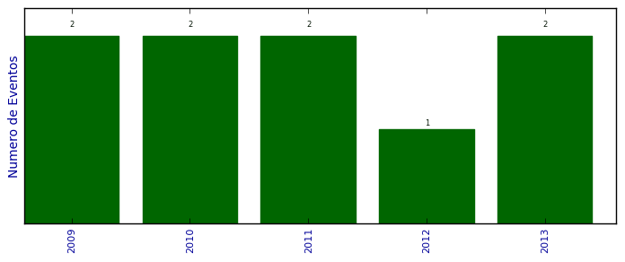

UFSM - Análise do Lattes
Total de organização de eventos

Número total de itens: 9
2013
| 1. | VIEIRA, S. A. G.. VI WORKSHOP EM NANOCIÊNCIAS. 2013. Congresso |
| 2. | VIEIRA, S. A. G.. SOFTWARE FREEDOM DAY SANTA MARIA: A Celebração Mundial do Software Livre. 2013. Outro |
2012
| 1. | VIEIRA, S. A. G.. XVI SIMPÓSIO DE ENSINO, PESQUISA E EXTENSÃO. 2012. Congresso |
2011
| 1. | VIEIRA, S. A. G.. X SIMPÓSIO DE INFORMÁTICA DA REGIÃO CENTRO / RS. 2011. Congresso |
| 2. | VIEIRA, S. A. G.. XV SIMPÓSIO DE ENSINO, PESQUISA E EXTENSÃO. 2011. Congresso |
2010
| 1. | VIEIRA, S. A. G.. XIV SIMPÓSIO DE ENSINO, PESQUISA E EXTENSÃO. 2010. Congresso |
| 2. | VIEIRA, S. A. G.. IX SIMPOSIO DE INFORMÁTICA DA REGIÃO CENTRO DO RIO GRANDE DO SUL. 2010. Congresso |
2009
| 1. | VIEIRA, S. A. G.. IV WORKSHOP EM NANOCIÊNCIAS. 2009. Exposição |
| 2. | VIEIRA, S. A. G.. XIII SIMPÓSIO DE ENSINO, PESQUISA E EXTENSÃO. 2009. Congresso |
(*) Relatório criado com produções desde 2009 até HOJE
Data de processamento: 11/04/2014 20:58:28